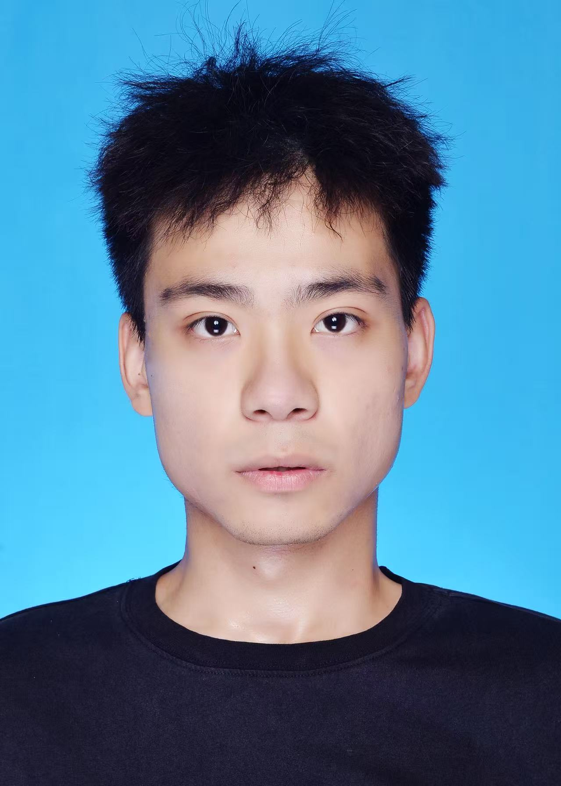

微信 / wechat
微信号
💬
kako_108
欢迎光临 / 本人看起来比实际状态稳定
照片、联系方式和头衔都放好了，免得你翻半天。本人性格不错，主要看当天有没有吃饱；聊天不用破冰，直接发“在吗”也行，我一般会先在心里回你三遍。

证件照：本人努力自然，最后还是像在等下班头衔都是真的，实力有时在，有时路上堵车；认证方式也很简单：本人说是就是。有什么疑问，建议先请我吃饭再复核。
微信、QQ、邮箱都在这儿，想加就加，不用先写申请。我回得慢不一定是高冷，可能是在脑内把回复改到第三稿，还没敢发出去。
本人属于看着挺正常、熟了以后也没有更正常的类型。日常爱好是想太多、吃太快，以及在“马上”和“等会儿”之间反复横跳。
我对人生的态度比较积极：遇到困难先深呼吸，遇到大困难先看看有没有人能替我。工作上积极配合，心里积极下班；对未来充满期待，期待它别来得太早。
随机抽取一条本人精神状态报告：上半句还算体面，下半句负责拆台。人生不一定有反转，但这个按钮有。